3.1.2 Configuración del punto de acceso o router inalámbrico
1. Recursos necesarios
- Punto de acceso o router wifi. Para este caso, se tiene un punto de acceso D-Link 900AP+.
- Equipo ubuntu server con el servidor freeradius instalado y configurado según el punto 3.1.1.
2. Cliente radius con Punto de acceso
En este apartado, se va a configurar un cliente radius mediante un punto de acceso D-Link 900AP+.
Este punto de acceso no admite WAP2/WPA3 enterprise, pero como ejemplo de configuración y uso, no conlleva grandes modificaciones de un punto de acceso que sí permita WPA2/WAP3.
2.1 Vincular el punto de acceso
Para vincular FreeRADIUS al AP D-Link 900AP+, hay que iniciar sesión en el punto de acceso para realizar una serie de configuraciones. El esquema del conexionado de los equipos, es el que se puede observar en la figura siguiente.
{kind=link}
Figura 1. Esquema de conexionado con AP.
A continuación, se describen en las siguientes imágenes las configuraciones a realizar.
Acceso al AP
En primer lugar hay que abrir un navegador y poner la url https://192.168.0.50, que es la dirección ip del AP D-Link por defecto. Las credenciales son admin y el password vacío.
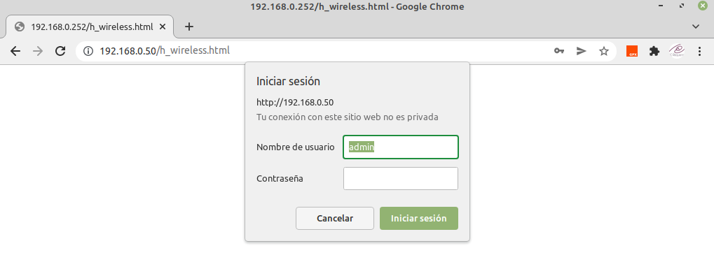
Configurar Ip
El siguiente paso es configurar el tcp/ip del equipo. Tanto el gateway como el DNS, es la ip del router que tiene salida a internet (WAN), ver Figura 1.
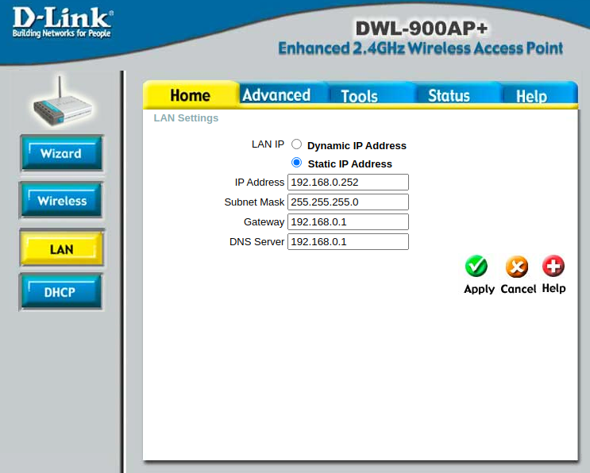
Configurar servidor RADIUS
A continuación, hay que establecer el SSID (como ejemplo ciber-freeRadis), el canal, se deja el 6 y el método de autenticación se selecciona WPA dado que en este equipo (por su antiguedad) no tiene la posibilidad de seleccionar WPA2/WPA3.
Por último, hay que configurar los datos del servidor radius, donde hay que establecer la ip donde se tiene el servidor freeRadius, el puerto 1812 y el secreto compartido que es lo que se configuró en el fichero clients en el servidor freeradius. Por último, se selecciona la clave de cifrado de 128 bits.
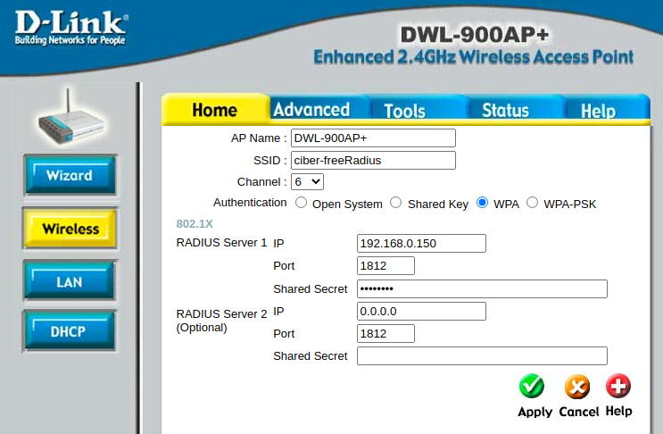
Modo AP
El modo AP, se selecciona Access Point.
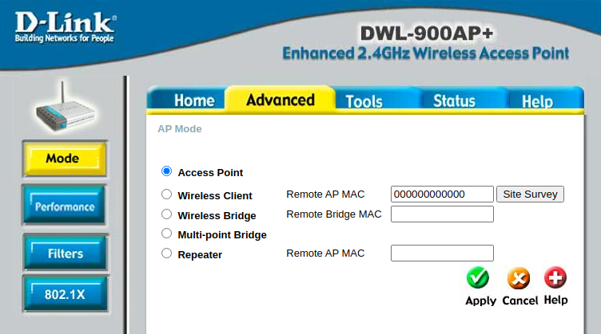
Configurar 802.1X
a continuación, se selecciona la longitud de la clave para el cifrado (128 bits) y el tiempo de vida que se deja en 30 minutos.
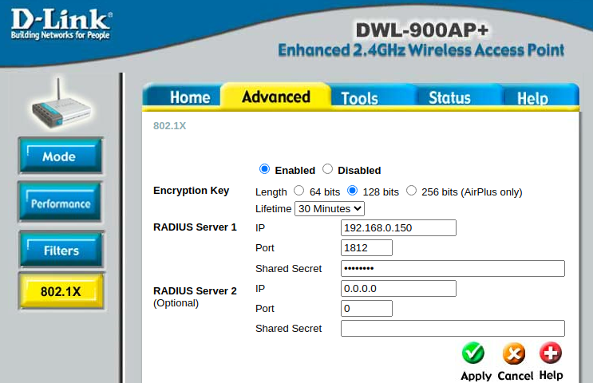
Configurar servidor DHCP
A continuación, el servidor DCHP se deshabilita ya que será el router con acceso a internet el que proporcionará la ip a los equipos que se unan a la red wifi.
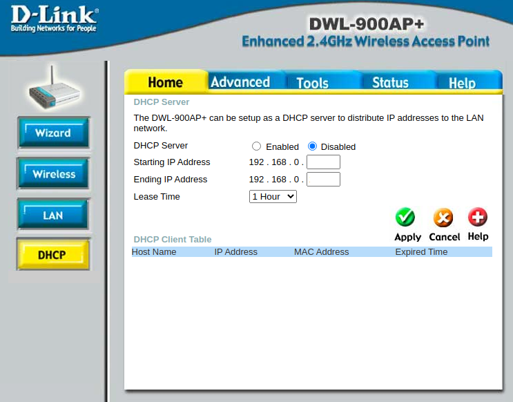
Estado
Por último, se consulta el estado para comprobar que las configuraciones que se han realizado, se han consolidado y son correctas.
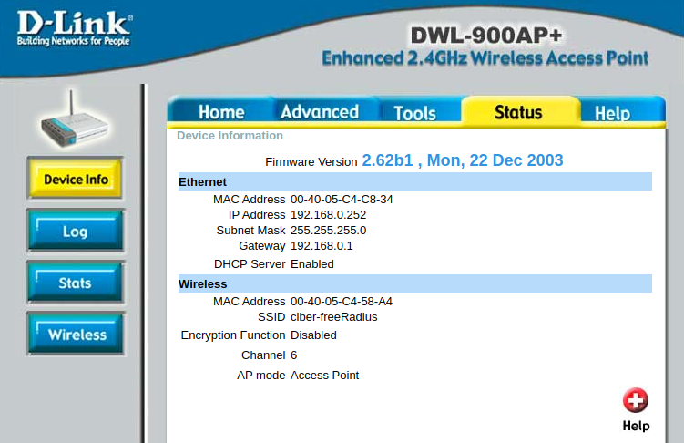
Para comprobar la conectividad, se realiza un ping al Punto de Acceso desde un equipo conectado en la LAN y desde el servidor freeradius.
Prueba 1
Desde un equipo conectado al switch por cable, se realiza un ping al punto de acceso.
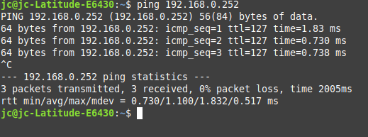
Prueba 2
Desde el servidor freeRadius conectado al switch por cable (el anfitrión), se realiza un ping al punto de acceso.
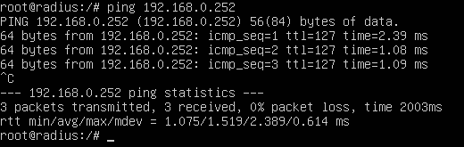
3. Cliente radius con Router Wifi como AP
En este apartado, se va a configurar un cliente radius mediante un router Linksys configurado como AP.
2.1 Vincular el Router AP
Para vincular FreeRADIUS al router linksys, hay que iniciar sesión en el router para realizar una serie de configuraciones. El esquema del conexionado de los equipos, es el que se puede observar en la figura siguiente.

Figura 2. Esquema de conexionado con router en modo AP.
A continuación, se describen en las siguientes imágenes las configuraciones a realizar.
Configuración tcp/ip
En primer lugar, se establece una ip en la subred 192.168.0.0/24 ya que el router se conecta a la LAN del router que da acceso a internet (fibra óptica). La ip es la 192.168.0.250. Por otro lado, se deshabilita el servidor dhcp, ya que el encargado de proporcionar las direcciones ip a los equipos que se una a la red, será el router fibra óptica.
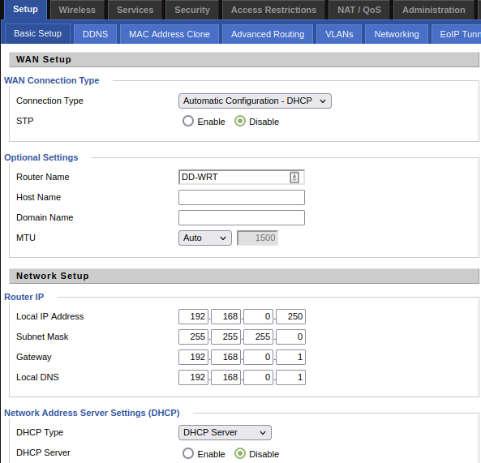
Configuración del wireless
A continuación, hay que configurar el router en modo AP, el modo de seguridad como WAP2 y algoritmo AES, la dirección ip del servidor freeRadius y el puerto 1812 UDP y el secreto compartido que se configuró en el fichero clients del servidor freeRadius.
Respecto al canal, se puede seleccionar uno que no se esté utilizando en el área donde se va a ubicar el AP, para este caso se elige el 6.
Por último, se establece el SSID que para este caso, es linksys-freeradius.
| 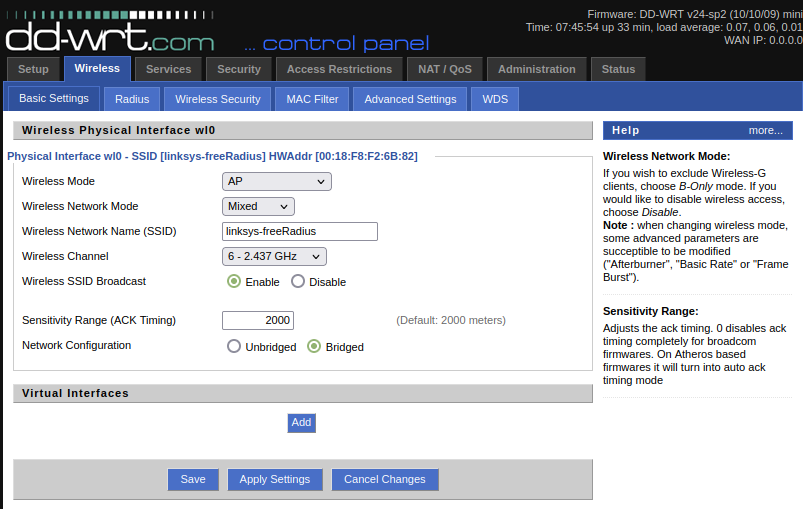 | 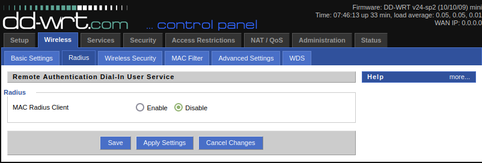 | 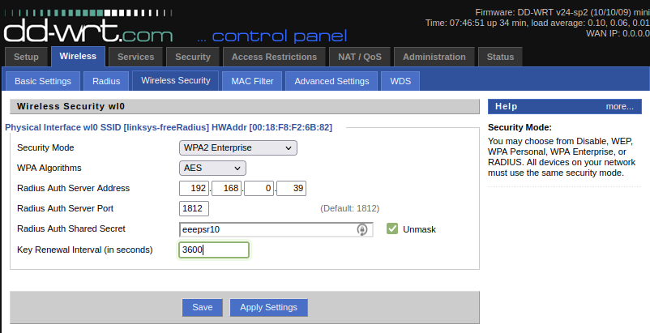 |
{kind=link}
{kind=link}
{kind=link}
Obra publicada con Licencia Creative Commons Reconocimiento No comercial Compartir igual 4.0